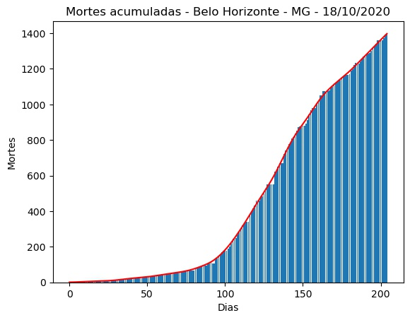
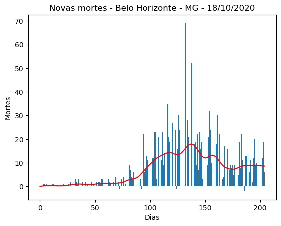
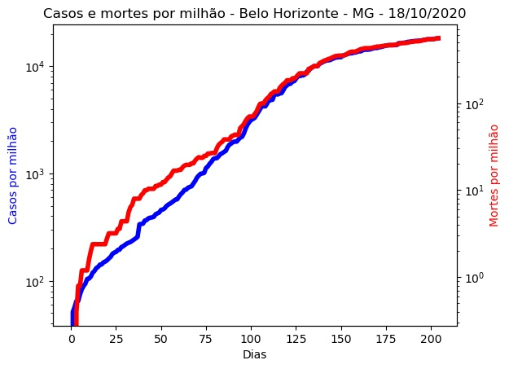
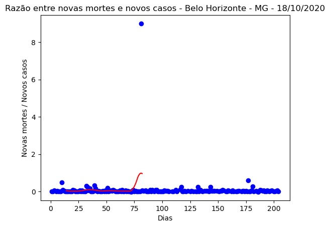
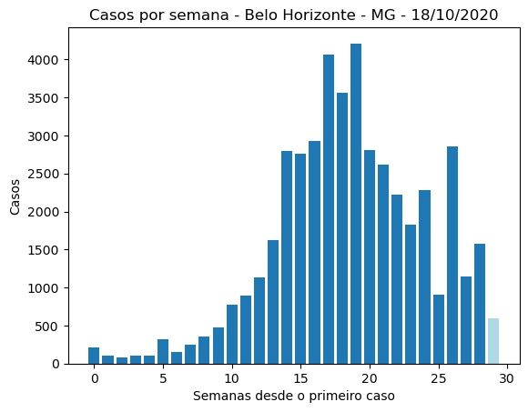
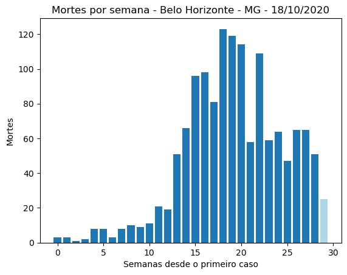
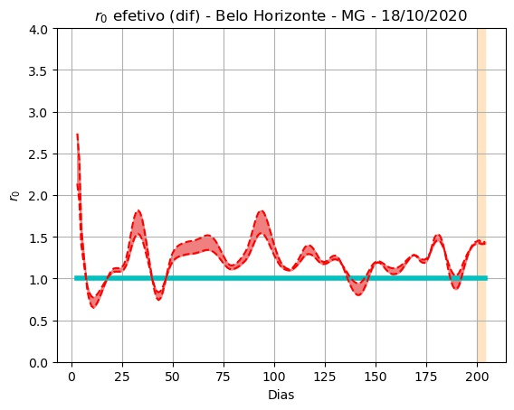
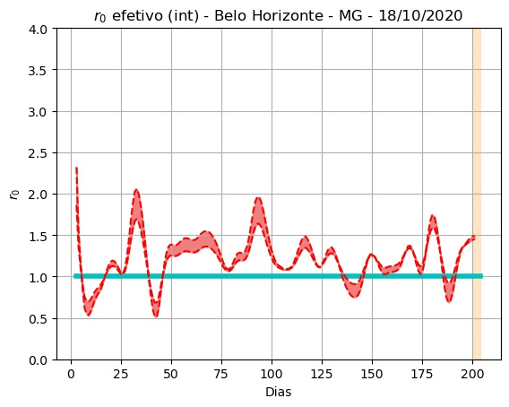
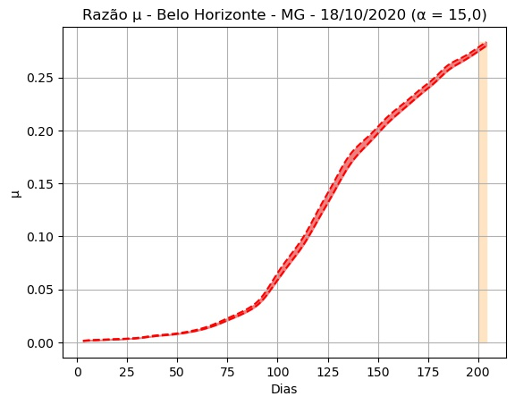

Belo Horizonte - MG - 18/10/2020.
Detalhes técnicos, aqui. Clique aqui para uma versão em PDF desta análise.
População: 2.512.070.
Início e fim da série: 2020-03-27 e 2020-10-17. (205 elementos - 29 semanas e 2 dias).
Número de casos totais e mortes: 45.720 e 1.397. (18.200 e 556 por milhão de habitantes, respectivamente.)
r0 (integral) efetivo médio (duas últimas semanas - três dias de atraso): 1,22 (std = 0,25).
Último intervalo para r0 (três dias de atraso): (1,45 : 1,50).
Limiar imunidade de grupo nR (baseado no valor de r0 (integral) efetivo médio) = 0,18.
Previsão do número total de casos para os próximos 5 dias: 45.922, 46.124, 46.326, 46.528, 46.730.



 
 
 
